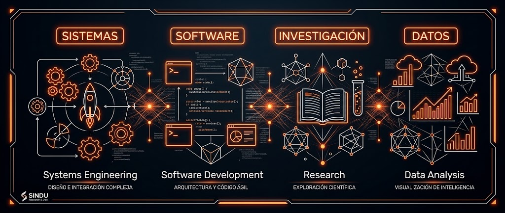

Optimizando la infraestructura TI, la trazabilidad de solicitudes y el control de activos mediante arquitecturas de software robustas y plataformas de Ticketing de código abierto.

Somos estudiantes de 7mo semestre de Ingeniería Informática de la Corporación Universitaria de Cataluña, comprometidos con el desarrollo de soluciones de software eficientes, la optimización de procesos tecnológicos y la formulación de proyectos aplicados a la industria.
Estructurar e implementar el sistema OCSYSTEM integrando GLPI para la gestión de tickets de soporte, control de mesa de ayuda e inventario de infraestructura TI de forma centralizada.
Aplicación de buenas prácticas ITIL v4, arquitectura web escalable en PHP/MySQL, seguridad de la información y control de calidad bajo normas ISO 27001.
La ausencia de una herramienta centralizada para el registro de solicitudes técnicas provoca demoras en la atención de requerimientos, falta de métricas de rendimiento (SLA) e ineficiencia en el control de inventario informático.
Despliegue de un entorno de Mesa de Ayuda que permite el registro automático de tickets, asignación por niveles de soporte, seguimiento de incidentes en tiempo real y categorización de activos de red y hardware.
Recepción, priorización y canalización de tickets de incidentes y requerimientos técnicos.
Registro detallado de equipos, servidores, software, licencias y dispositivos de red.
Monitoreo de tiempos de respuesta y solución acordados con las áreas usuarias.
Generación de reportes de gestión e indicadores para la toma de decisiones estratégicas.
Lenguaje PHP para el procesamiento de lógica de negocio y API REST de integración.
MySQL / MariaDB estructurado para alta disponibilidad e integridad relacional.
Apache / Nginx desplegado en entornos Linux para optimizar tiempos de respuesta.
Control de acceso basado en roles (RBAC), cifrado SSL/TLS y copias de seguridad continuas.
Ponte en contacto con los investigadores del Semillero OCSYSTEM.